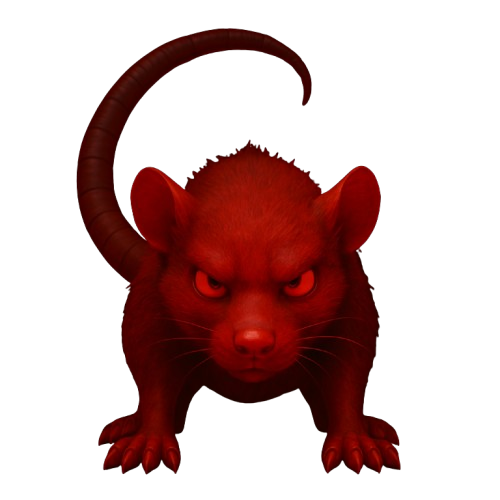
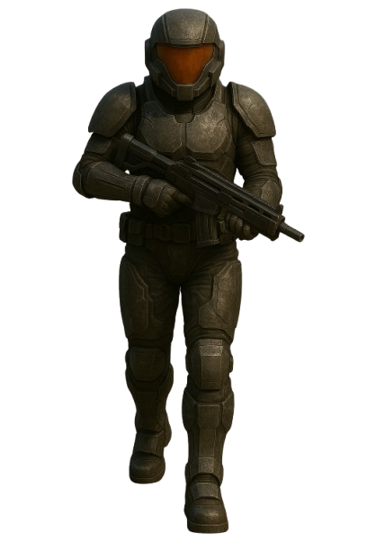
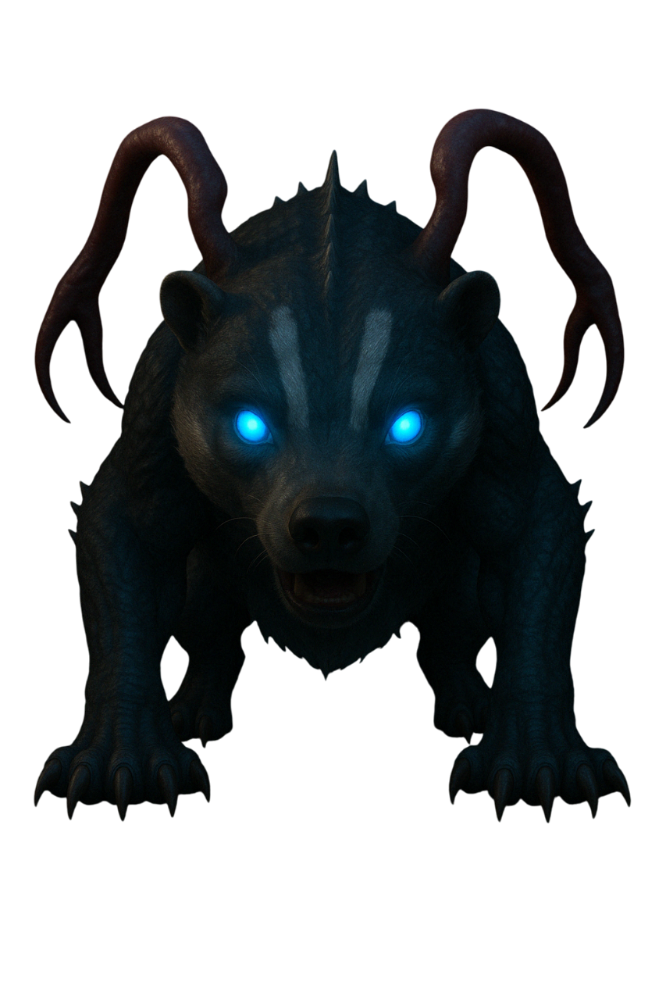
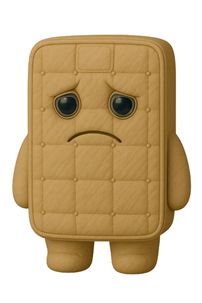
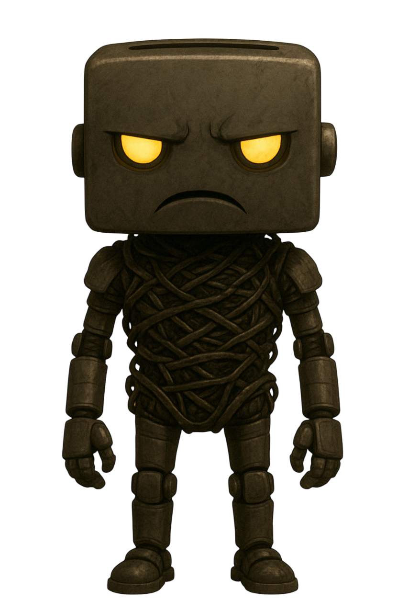
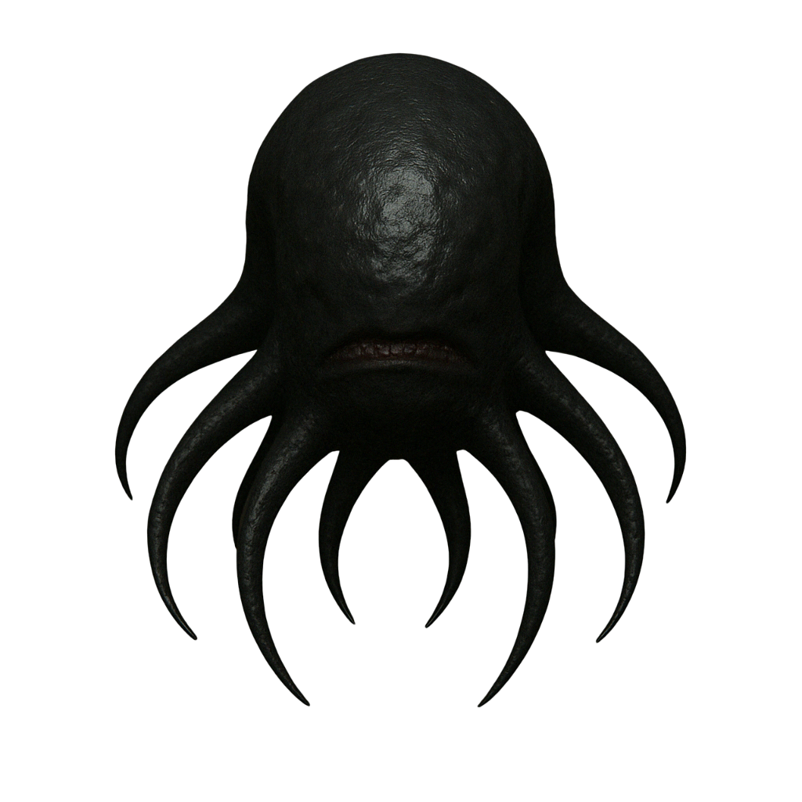
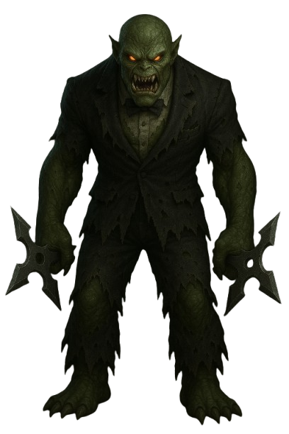
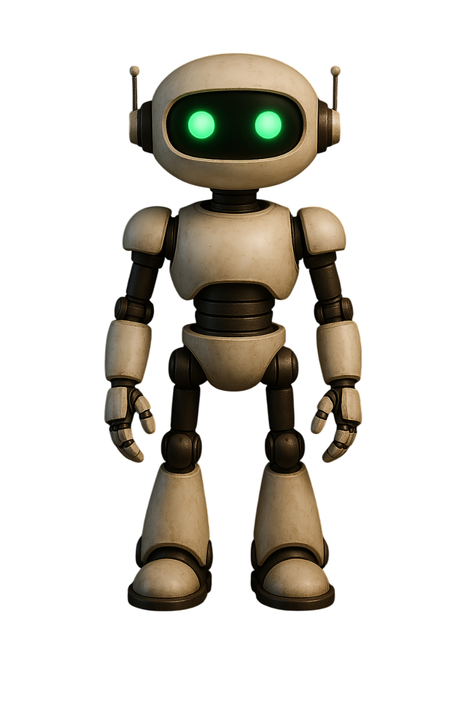

Priča
Priča se odvija kroz dijaloge s Marvinom (robotskim glasom iz zvučnika) koji vodi Arthura kroz brod i daje mu upute. Napredak kroz nivoe prati narativ o spašavanju broda i oslobađanju posade od Vogona i preuzimatelja. Na kraju igre, nakon poraza Vogona, Arthur je proglašen kapetanom broda, što ga iznenađuje, a završava s njegovom karakterističnom željom za čajem.
Svijet i neprijatelji
Svijet igre je svemirski brod "Beskonačna Beznađe", koji je u kaotičnom stanju nakon napada Vogona. Svaki nivo ima jedinstvene neprijatelje i atmosferu.
Nivo 1: Štakori

Nivo 1 karakteriziraju mračni hodnici s crvenim osvjetljenjem. Glavni neprijatelji su mutirani štakori koji su narasli do enormnih veličina nakon izlaganja eksperimentalnom zračenju. Ova agresivna stvorenja napadaju sve što se kreće i preuzela su donje palube broda.
Nivo 2: Klonovi i jazavci


Nivo 2 odvija se u sterilnim područjima s plavim osvjetljenjem. Ovdje se Arthur suočava s kloniranim članovima posade koji su poludjeli i napadaju sve što se kreće, uz mutirane jazavce koji su bili dio neuspjelog eksperimenta u biološkom laboratoriju broda.
Nivo 3: Madraci i tosteri


Nivo 3 smješten je u eksperimentalnim laboratorijima sa žutim osvjetljenjem. Neprijatelji uključuju inteligentne skačuće madrace koji pokušavaju ugušiti Arthura i fanatične tostere koji ispaljuju zapaljene kriške tosta velikom brzinom.
Mini Boss: Parazit

Nakon nivoa 3, Arthur se susreće s mini-bossom: divovskim parazitom koji se hranio energetskom jezgrom broda. Ovo stvorenje razvilo je telepatske sposobnosti i može stvarati iluzije kako bi zbunilo Arthura. Za pobjedu je potrebno pronaći njegovu slabu točku dok se navigira kroz labirint lažnih stvarnosti.
Nivo 4: Vogon Boss

Nivo 4 odvija se na zapovjednom mostu sa zeleno-žutim osvjetljenjem. Finalni boss je Vogon birokrat naoružan smrtonosnom poezijom i pečatom koji može označiti Arthura za trenutno uništenje. Za pobjedu su potrebni brzi refleksi i pronalazak ultimativnog oružja: šalice čaja.
Likovi
Marvin

Marvin je sarkastični, depresivni robot koji pomaže Arthuru kroz zvučnički sustav broda. Unatoč njegovim stalnim pritužbama i tmurnom pogledu na svijet, njegovo vodstvo je ključno za Arthurovo preživljavanje. Ima mozak veličine planeta, ali je sveden na obavljanje beznačajnih zadataka, što samo produbljuje njegovu depresiju.